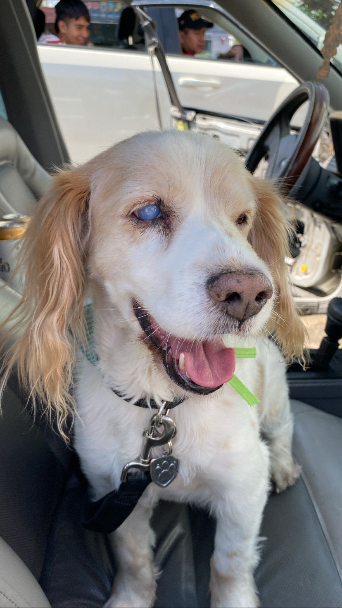

Proyecto Cards
Desarrollador frontend en formación y estudiante de Derecho. El camino al éxito está pavimentado por fracasos.
Ver proyectos

Sobre mí
Soy estudiante de Derecho con pasión por el desarrollo web. Me gusta estructurar proyectos de forma profesional, cuidar los detalles visuales y asegurar que todo funcione perfecto en cualquier dispositivo. Estudiante de Derecho en CESCJUC (5º semestre) con experiencia laboral en atención al cliente, administración, operación de cafeterías y recepción. Profesional proactivo y versátil, con habilidades en liderazgo, organización y resolución de problemas en entornos de alta presión. Destacado por la capacidad de adaptación, el manejo de tecnología y la orientación al trabajo en equipo.
Habilidades
- HTML semántico
- CSS (Flexbox, responsive)
- JavaScript básico
- Organización de proyectos y GitHub